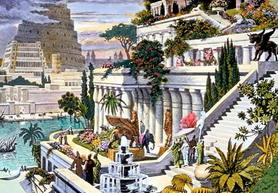

 Висячі Сади Семіраміди — одне з семи чудес світу, що було розташоване у легендарному Вавилоні. Вони були побудовані для дружини вавилонського царя Навуходоносора II Семіраміди, яка сумувала за горами та лісами своєї батьківщини. Історія створення садів сягає давніх часів. Вавилонський цар Навуходоносор II (605—562 р. до н. е.) для боротьби проти головного ворога — Ассирії, війська якої двічі руйнували столицю держави Вавилон, уклав військовий союз із Кнаксаром, царем Мідії. Перемігши, вони розділили територію Ассирії між собою. Військовий союз був зміцнений одруженням Навуходоносора II із дочкою мідійського царя Амітіс. Запорошений і шумний Вавилон, розташований на пустельній піщаній рівнині, не радував царицю, яка зросла в гористій і зеленій Мідії. Щоб утішити її, Навуходоносор наказав звести «висячі сади». Найточніші сучасні відомості про Сади походять від грецьких істориків, зокрема, Вероссуса й Діодоруса, але опис садів досить мізерний. Ось як описані сади в їх свідченнях